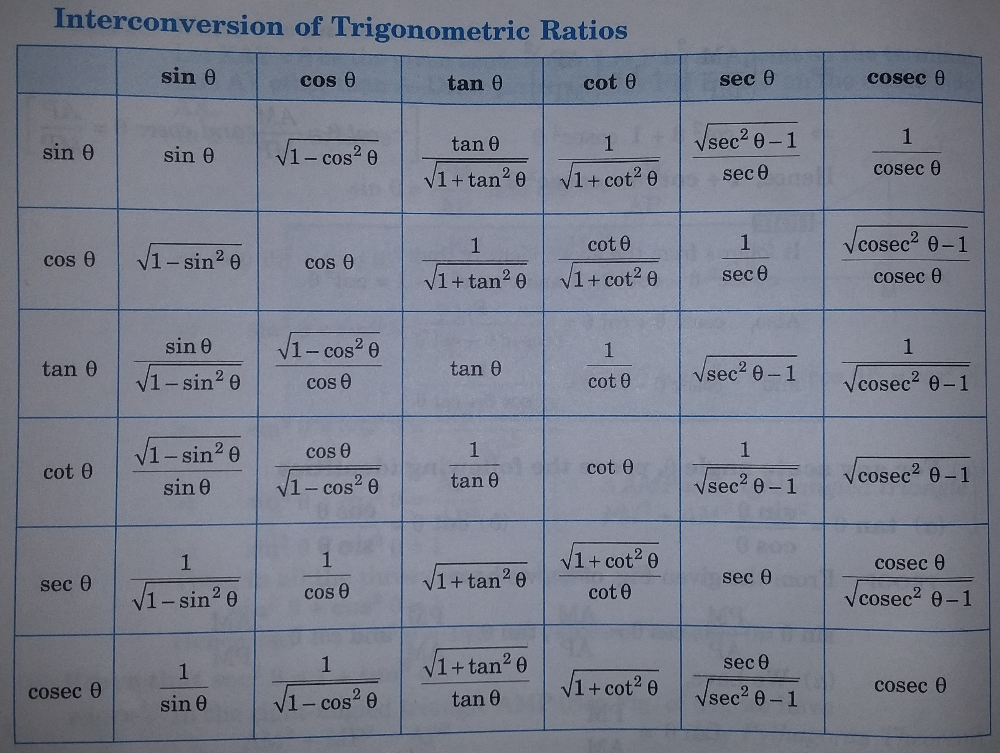

An equation involving trigonometric ratio of an angle θ is said to be a trigonometric identity, if it is satisfied for all values of θ for which the given trigonometric ratios are defined.
SOME TRIGONOMETRIC IDENTITIES :
sin2θ + cos2 = 1
sec2θ = 1 + tan2
cosec2θ = 1 + cot2θ
INTERCONVERSIONS OF TRIGONOMETRIC RATIOS

Let us consider some examples to make understanding of fundamental of the concept very easy and clear.
1) Is sin A + sin2 A = 1, then the value of the expression (cos2 A + cos4 A) is (i) 1 (ii) 1/2 (iii) 2 (iv) 3
SOLUTION:
sin A + sin2 A = 1
→ sin A = 1 - sin2 A
→ sin A = cos2A
→ sin2A= cos4
→ 1 - cos2A= cos4A
→ cos2A + cos4 = 1
∴ option (i) is correct.
2) Prove that sin θ cos (90°-θ) + cos θ sin (90°-θ) = 1
SOLUTION:
L.H.S. → sin θ cos (90°-θ) + cos θ sin (90°-θ)
→ sin θ × sin θ + cos θ cosθ
→ sin2 θ + cos2
→ 1 = R.H.S. Hence proved.